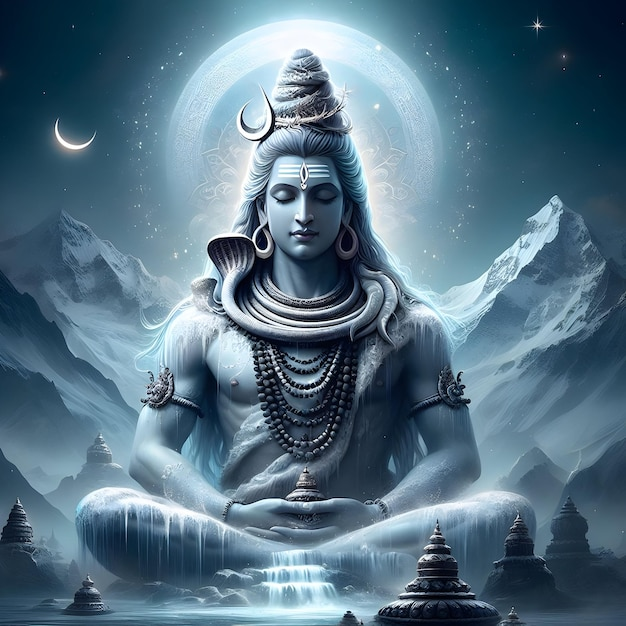

आज की दुनिया में हर व्यक्ति जल्दी सफलता चाहता है। हर कोई shortcut ढूंढता है। लेकिन अगर हम महादेव के जीवन को देखें तो एक अद्भुत सत्य सामने आता है।
जो सृष्टि के स्वामी हैं, जो ब्रह्मांड के नायक हैं, वही शिव हजारों वर्षों तक ध्यान और तपस्या में लीन रहते हैं।
🌑 सती का बलिदान – आत्मसम्मान का संदेश
सती माता ने अपने पिता दक्ष के यज्ञ में अपमान सहन नहीं किया। उन्होंने अपने आत्मसम्मान के लिए अपने शरीर का त्याग कर दिया।
यह घटना केवल एक कथा नहीं है, बल्कि एक गहरा संदेश है — जहाँ सच्चा प्रेम होता है, वहाँ सम्मान भी होना चाहिए।
🕉 पार्वती की तपस्या – सफलता का असली मार्ग
पार्वती जी ने महादेव को पाने के लिए वर्षों तक कठिन तपस्या की। ना आराम, ना शिकायत, ना हार मानना।
आज का युवा थोड़ी सी कठिनाई में ही हार मान लेता है, लेकिन पार्वती की कहानी सिखाती है कि जो लक्ष्य सच्चा होता है, उसे पाने के लिए धैर्य और निरंतर प्रयास जरूरी होता है।

🔥 रुद्र रूप – जब अन्याय सीमा पार कर जाए
महादेव को सबसे शांत देवता माना जाता है। लेकिन जब अन्याय सीमा पार कर जाता है, तब वही शिव रुद्र बन जाते हैं।
रुद्र का अर्थ केवल क्रोध नहीं है। रुद्र का अर्थ है सत्य और न्याय की रक्षा करना।
🐒 हनुमान – शिव का अनुशासन रूप
कई ग्रंथों में हनुमान जी को शिव का अंश माना गया है। हनुमान की सबसे बड़ी शक्ति उनका अनुशासन और नियंत्रित मन था।
यह हमें सिखाता है कि जिसकी मन पर पकड़ है, वही जीवन में सबसे शक्तिशाली बन सकता है।
🌌 आज के युवाओं के लिए महादेव का संदेश
अगर महादेव आज के समय में होते तो शायद युवाओं से कहते —
- दूसरों से तुलना मत करो
- अपने माता-पिता का सम्मान करो
- अपने लक्ष्य के लिए तपस्या करो
- अपने मन को नियंत्रित करना सीखो
महादेव मंदिरों में ही नहीं रहते। वे हर उस व्यक्ति के भीतर रहते हैं जो सत्य, साहस और धैर्य के साथ जीवन जीता है।
इसलिए जब भी जीवन में कठिनाई आए, बस यह याद रखना — भगवान होकर भी शिव ने तपस्या की थी।
अगर हम भी धैर्य, अनुशासन और विश्वास बनाए रखें, तो कोई भी कठिनाई हमें रोक नहीं सकती।
🔱 हर हर महादेव
अगर आप महादेव से जुड़ी और प्रेरणादायक कहानियां पढ़ना चाहते हैं, तो Punit AI के Mahadev Bhakti section पर और भी लेख पढ़ सकते हैं।